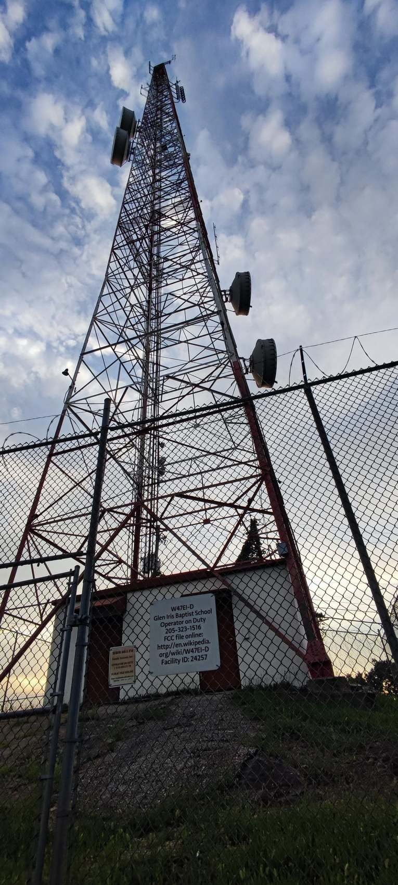
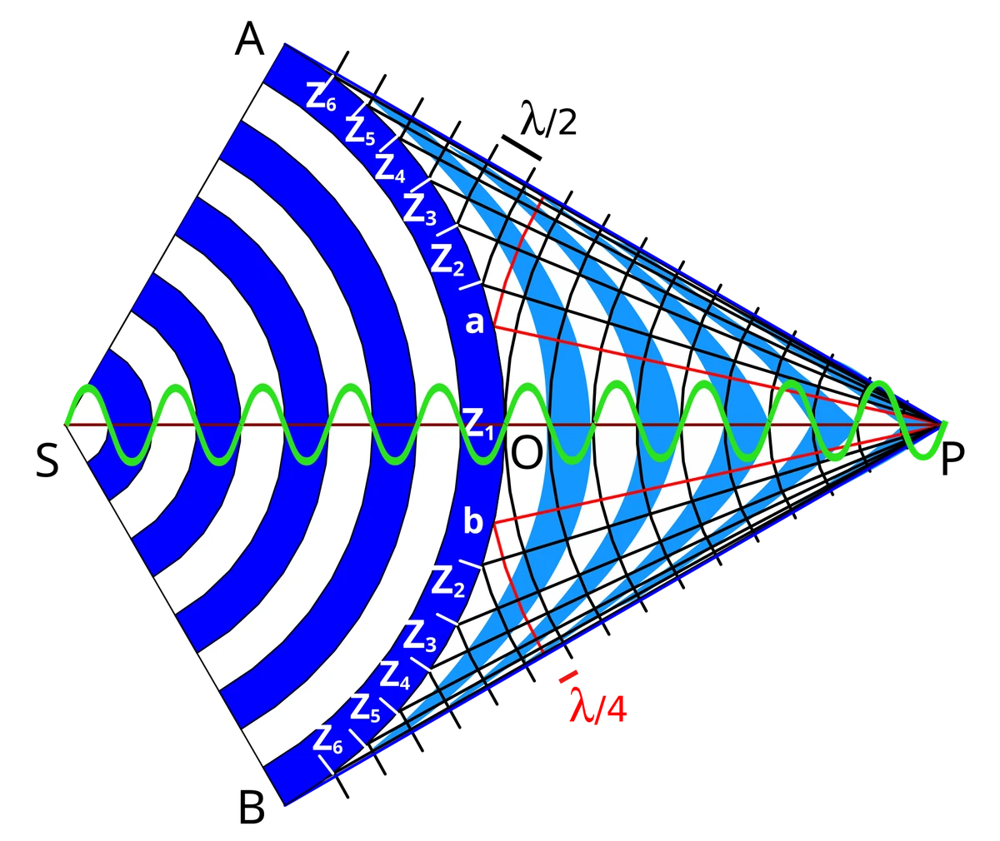
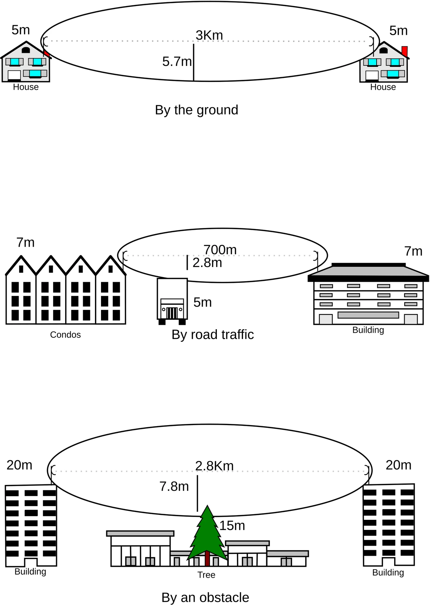

📶 Enlaces de microondas: teoría y práctica de campo
Complemento de la PARTE 3.2 de la Guía de Telecomunicaciones. El microondas es la columna vertebral de la transmisión cuando no hay fibra disponible: enlaces punto a punto que transportan el tráfico de una radiobase a la central.

1. ¿Qué es un enlace de microondas?
Es un enlace de radio de banda milimétrica (típicamente 1 — 80 GHz) entre dos antenas con línea de vista. A diferencia de la fibra, no requiere excavar ni tender cable entre puntos: se instala en torres o edificios y se alinea; a cambio, es sensible a la lluvia, a la obstrucción y a la alineación.
- Transporta: tráfico 2G/3G/4G/5G (backhaul), enlaces corporativos, respaldo de fibra.
- Distancias típicas: 0,5 — 50 km según banda, potencia y altura de antenas.
- Disponibilidad objetivo: 99,999 % en enlaces troncales (≈ 5 min de caída al año).
2. Componentes del enlace
- IDU (unidad interior): rack con tarjetas que modulan/demodulan y entregan E1/FE/GE al equipo de red.
- ODU (unidad exterior): transceptor montado detrás de la antena; convierte la señal a la frecuencia de trabajo.
- Antena: parabólica (alta ganancia, estrecha) o sectorial/horn (para corta distancia y sectores múltiples).
- Guía de ondas o coax: lleva la señal entre ODU y antena; en bandas altas casi siempre guía de ondas.
- GPS/sincronización: disciplina la frecuencia para modulaciones altas (256QAM) y TDD.
- Atenuadores: si el enlace es muy corto, evitan saturar el receptor.
3. Bandas de trabajo
| Banda (GHz) | Distancia típica | Características |
|---|---|---|
| 7 / 8 / 10 / 11 / 13 / 15 | 10 — 50 km | Troncal de larga distancia; menos lluvia, antenas grandes |
| 18 / 23 | 3 — 25 km | Versátil, muy usada en backhaul celular |
| 26 / 28 / 32 | 1 — 15 km | Alta capacidad sobre cortas distancias |
| 38 / 40 / 70 / 80 | 0,3 — 5 km | Gigabit en metro; muy sensible a lluvia (rain fade) |
Regla práctica: cuanto mayor la frecuencia, menor la distancia y mayor la sensibilidad a la lluvia; mayor el ancho de canal y la modulación, mayor la capacidad — y menor el margen de enlace.
4. Línea de vista y zona de Fresnel

- Distancia radioeléctrica (k = 4/3): d (km) ≈ 4,12 · (√h₁ + √h₂) con alturas en metros. Ejemplo: dos antenas a 25 m → d ≈ 41 km teóricos.
- Radio de la 1.ª zona de Fresnel: r₁ (m) = 17,32 · √(d km / f GHz). Se recomienda libre al menos el 60 % de r₁.
- Obstáculos dentro de la elipse causan difracción y pérdida de margen aunque "se vea" la antena.

5. Presupuesto de enlace y disponibilidad
- Pérdida en espacio libre: FSLoS (dB) = 32,45 + 20·log(d km) + 20·log(f GHz).
- Ganancias: sume la ganancia de antena (+) y reste pérdidas de guía de ondas, conectores y lluvia.
- Margen de enlace: nivel recibido − sensibilidad del receptor; debe superar el margen de desvanecimiento de la zona (lluvia, humedad, reflejos). En el Caribe usar estudios de lluvia locales (ITU-R P.837).
- Disponibilidad: cada margen dB adicional compra "minutos de caída" por año; el operador fija el objetivo (99,99 % — 99,999 %).
6. Polarización, modulación y capacidad
- Polarización horizontal/vertical (y a veces ±45° cruzadas): el ajuste fino de la polarización ganará 1 — 3 dB.
- Modulación adaptativa (ACM): el equipo baja de 256QAM a QPSK cuando llueve o degrada el enlace; la capacidad cae pero el enlace se mantiene vivo (clave para no perder el servicio).
- Ancho de canal: 7 — 56 MHz; más ancho = más Mbps y más exigencia de margen.
7. Alineación de antenas (paso a paso)
- Verifique orden de trabajo, zona y riesgo de altura; arnés y herramienta amarrada.
- Revise el nivel de referencia en el sintonizador con la antena en su posición actual.
- Deje al compañero acomodar la alineación gruesa (punta de martillo/direccional) en azimut y elevación según los ángulos del diseño.
- Ajuste azimut buscando el máximo de nivel Rx; luego elevación; repita.
- Ajuste polarización con el giro de la antena hasta el máximo.
- Estabilice: no mueva nada; verifique con la tabla de niveles ±1 dB del diseño y confirme VSWR.
- Fije tuercas con par (llave dinamométrica) y deje marcas de alineación (pintura) en soporte y antena.
- Guarde la captura del sintonizador y las mediciones en el ticket.
8. Mantenimiento de campo (checklist)
- Inspección visual: reflector limpio (barro, excremento de ave, vegetación), sin abolladuras.
- Tornillería con par y sellada; sin holguras ni vibración en góndola o soporte.
- Guía de ondas sin deformaciones; conectores firmes; atenuador (si existe) en su lugar.
- Niveles y VSWR dentro de la línea base; alarmas del ODU/IDU revisadas.
- Sin reflejos parásitos: verifique que no haya otro enlace apuntando a su antena.
- Protecciones contra rayos y puesta a tierra conformes.
- Fotos antes/después y estado del ticket.
9. Errores comunes
- Alinear "por parejo" en vez de buscar el máximo de nivel con el sintonizador.
- No marcar ni apretar con par → la antena se mueve con viento o calor.
- Ignorar el margen de lluvia en bandas de 38 GHz y armar un enlace que cae en temporada de lluvias.
- Confundir el nivel de potencia con la calidad: mirar solo Rx sin mirar C/N, errores y modulación.
- Olvidar la zona de Fresnel: "hay vista" pero el árbol invita la elipse y el margen desaparece.
10. Enlaces para seguir
- Guía principal — PARTE 3.2 (teoría y presupuesto)
- Videos: enlaces de microondas (YouTube)
- ITU-R P.837 — lluvia para diseño de enlaces
11. Créditos de imágenes
| Imagen | Autor | Licencia |
|---|---|---|
| micro_torre.jpg (torre con parabólicas) | Pelajanela — Wikimedia Commons | CC BY-SA 4.0 |
| fresnel_zonas.png | Popocatomar — Wikimedia Commons | CC BY-SA 4.0 |
| fresnel_roto.png | Konrad Roeder — Wikimedia Commons | CC BY-SA 2.5 |